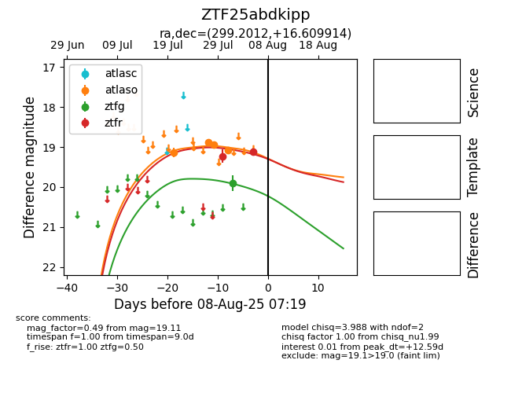

Target ZTF25abdkipp at 2025-08-06 17:45, see:
FINK: fink-portal.org/ZTF25abdkipp
Lasair: lasair-ztf.lsst.ac.uk/objects/ZTF25abdkipp
ALeRCE: alerce.online/object/ZTF25abdkipp
alt names
ZTF25abdkipp (ztf,fink)
coordinates:
equatorial (ra, dec) = (299.2012,+16.60991)
galactic (l, b) = (55.2432,-6.29327)
photometry
last atlaso=19.08, ztfg=19.90, ztfr=19.23
4 atlaso, 1 ztfg, 1 ztfr detections
